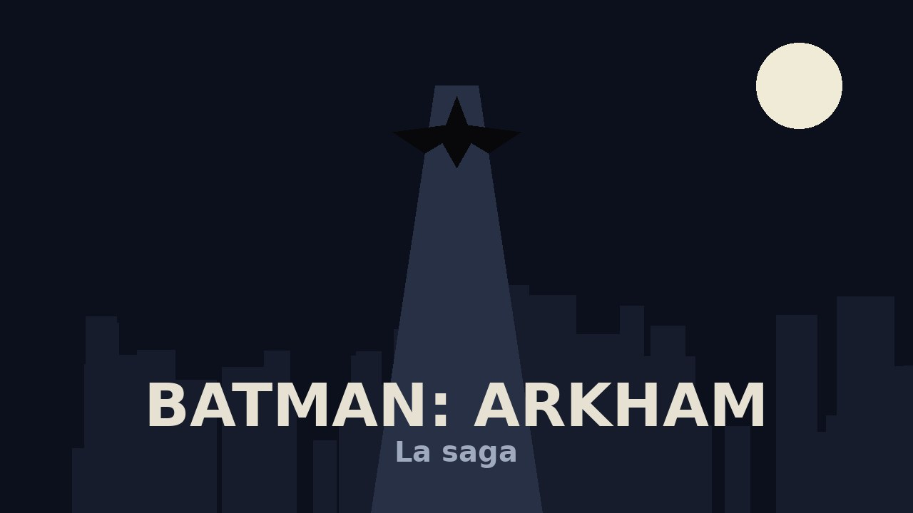

La saga Batman: Arkham es una serie de videojuegos de acción y aventura desarrollada por Rocksteady Studios (y Warner Bros. Montreal en su origen) que revolucionó el género de superhéroes. Ambientada en la ciudad ficticia de Gotham, nos pone en la piel de Batman mientras enfrenta a los villanos más icónicos de su rogues gallery.
Lo que hace especial a la saga es su sistema de combate fluido, el modo detective con la visión de detective, y unos villanos magníficamente escritos: el Joker, el Espantapájaros, Dos Caras, el Pingüino o Harley Quinn. La saga consta de cuatro entregas principales que van desde el encierro en el manicomio hasta la caída de toda Gotham.
